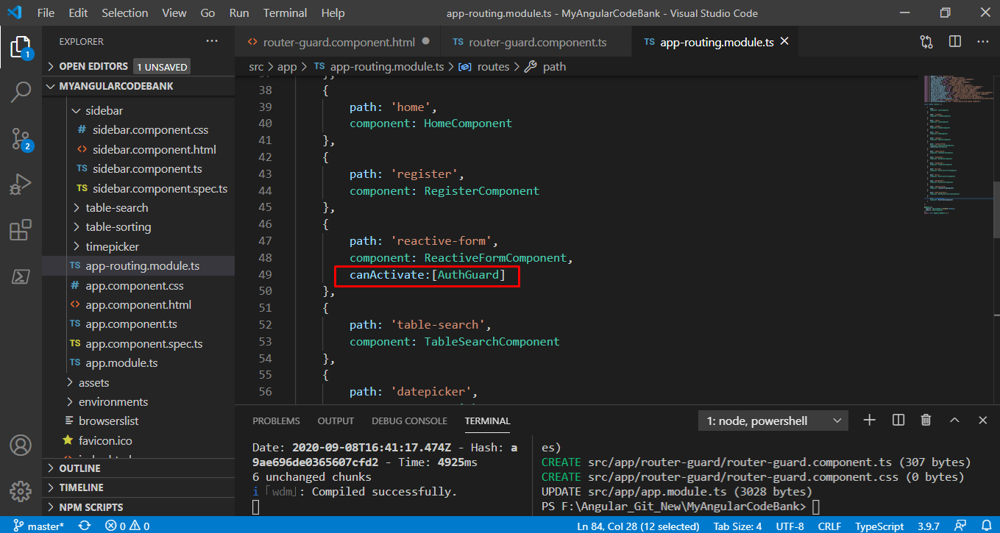

<div class="mycard">
	<div class="jumbotron">
		<h5>-> Can Activate Router Guard is a security feature for the application. It protect your application and restrict unauthrized user to access applicatin.</h5>
		<p>For example If an user dose not login the application (it means he is not authrized person) but he try to access any page of application by putting the url of that page in browser's url 
			bar the application will not allow him to access that page.</p>
		<ul>
			<li>Step 1: Create a guard using [ng g guard guard_name]</li>
			<li>Step 2: Register the guard in app.module.ts (You can check app.module.ts of this application)<strong>(Now it is not mendetory now angular has upgrade it so now there is no need to register guard in app.module.ts. So i am removing it's reference from app.module.ts)</strong></li>
			<li>Step 3: Now use <b>Can Activate Router Guard</b> in routing.module.ts file for the component that is to be restricted. 
				<br />
				<figure>
					<figcaption>Like This</figcaption>
					
					
				</figure>
			</li>
			<li>Step 4: Now check guard's file. in this file if returns true then component will be allowed to be accessd other wise that will be restricted.</li>
			<li>For more information please watch <a href="https://youtu.be/PbmY7tTPqBs" target="_blank">This Video</a></li>
		</ul>
		
	</div>
</div>
